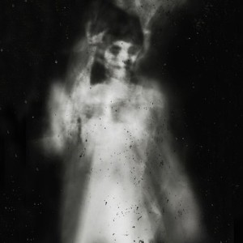

Truyện Kinh Dị – Số Kiếp
Tác Giả : Hưng
Phần 1: Hỏa Thần và Mộc Thần
Tiếng thở gấp cứ thế vang vọng, mộtngười đàn bà chạy dọc khu phố tới một tòa nhà to rộng có vườn, từ ngoài cửa, bàta như cố bắt lại nhịp thở của mình, giọng bà hết hơi:
– Thầy Trung ơi!… Thầy Trung!…
Từ trong nhà bước ra mở cửa sân là một thằng nhóc, thằngnhóc nhìn người đàn bà vẻ mặt lo lắng, nó nói:
– Bà, bà vào trong nhà đã.
Người đàn bà này đứng đó chống tay xuống đầu gối thở gậpnói:
– Thầy Trung … thầy Trung có nhà không con?
Thằng nhóc đáp:
– Dạ, ông con đang ngồi niệm kinh ạ.
Người đàn bà nói giọng cầu khẩn:
– Con … con vào bảo thầy ra giúp bà Huệ gấp ….Nguy … nguy to rồi con ạ.
Thằng nhóc này nhìn vẻ mặt của người đàn bà này thì thấy quảlà có gì đó không ổn, nó vừa mới quay đầu định chạy vô gọi ông mình thì ôngTrung đã bước ra cửa cùng với hai người con trai cả, ông Trung nói:
– Tí, vào đi ngủ đi.
Thế rồi ông Trung nhìn người đàn bà này nói:
– Bà Huệ, có chuyện gì?
Bà Huệ hai hàng nước mắt rưng rưng, bà ta quỳ xuống chân ôngTrung nói:
– Không xong rồi thầy ơi … con Cúc … con Cúc nhàtôi không xong rồi…
Ông Trung nhanh tay đỡ bà Huệ dậy và nói:
– Bà phải thật bình tĩnh, bây giờ hãy mau mau đưatôi đến nhà bà ngay.

Nói rồi một người con trai lớn của ông Trung đóng cánh cửangoài sân lại, sau đó cả bốn người tức tốc tiến thẳng về nhà bà Huệ.
Nhàbà Huệ nằm trong một căn ngõ không nhỏ lắm, vừa vào đến đầu ngõ là cả bốn ngườicó thể nghe thấy cái tiếng gào thét, rên la điên dại của đứa con gái duy nhất củabà vang vọng xé tan cái màn đêm tĩnh lặng này. Tiếng mèo kêu ré lên từng hồiquanh quẩn trong ngõ cộng với tiếng cười khóc không rõ ràng của Cúc như là chongười bình thường cảm tưởng như mình đang đi vào một con đường tối dẫn thẳng xuốngđịa phủ vậy. Bà Huệ mở cái cửa gỗ nhỏ bé, ông Trung vừa bước vào thì như bị têliệt, còn hai đứa con trai cả của ông vừa bước vào thì lập tức như bị cái gì đóchặn ở họng không sao thở được. Nhìn mặt hai đứa con trai của mình tím tái lại,ông Trung hiểu ngay rằng có điều gì đó không ổn, tức thì ông đưa hai tay lên niệmmột thứ thần chú gì đó, sau cùng ông xoa hai tay vào nhau và vỗ mạnh lên lưng củangười con trai cả, chỉ sau một cái vỗ là cả hai người đã có thể hít thở lại đượcnhư bình thường. Ông Trung cứ đứng đực người ra đó ở căn phồng khách, vọng từtrong phòng ngủ là tiếng Cúc cứ gào thét với rú ầm lên như một con thú điên dại,có vẻ như là cô ta đã đánh hơi được ông Trung, Ông Trung đứng ở cửa hít thở cáibầu không khí nặng nề và ngột ngạt này, ông đưa tay lên bấm ngón, thế rồi ông lắcđầu trên mặt có phần thất vọng. Ông thất vọng là vì ông nhận ra rằng ám khi tạicăn nhà này là quá nặng. vong hồn vất vưởng dường như tụ tập hết ở đây. Trướcđây Cúc có ốm liên miên mấy tháng, cho dù có thuốc thang ra sao cũng không khỏi.Thế rồi bà Huệ đã tìm được đến ông Trung mà nhờ ông rat ay cứu giúp. Ông Trungsau cái lần đó khám cho Cúc thì biết cô bị người âm theo rất nhiều do kiếp trướccó mắc nợ người ta nhiều lắm, thế nên ông đã bày cách và làm phép để đuổi đingười âm chứ không triệt họ. Vậy mà giờ đây, đứng tại căn nhà này, ông không thểngờ được rằng bằng cách nào mà những vong hồn đó đã phá bỏ được cách giải củaông mà nhập vào cô Cúc khiến cho cô ta chở nên điên loạn.
Nghĩ đến đây,ông Trung thấy rằng cần phải làm cho không khí bớt ngột ngạt đi thì mới làm việcđược. Thế rồi ông Trung mở cái trap nhỏ đeo ở vai lấy ra một tờ bùa mầu đỏ chóilói có vẽ hình một con chim loằng ngằng lắm. Ông Trung để tờ bùa đó vào giữahai bàn tay trước mặt khấn một vài câu, sau đó ông xoa xoa hai bàn tay và ngửamột bàn tay có lá bùa nằm trên ra trước mặt, ngay tức thì, tấm bùa này bốc lửacháy ngùn ngụt, từ đám khói của lá bùa bỗng xuất hiện ra một con chim lửa vàngchói lóa y như phượng hoàng lửa vậy, nó cứ bay lượn trên đầu ông Trung trước cáisự kinh hãi của bà Huệ. Đợi cho con chim lửa bay mấy vòng trên đầu cho tới khikhông khí trong nhà đã bớt ngột ngạt và ảm đạm đi thì ông Trung với cùng mọingười bước vào phòng ngủ. Trước mặt ông là cảnh tượng cô Cục bị lấy dây thừngtrói chặt hai tay vô cửa sổ ngồi trên cái giường gỗ cũ kĩ, ngồi ở góc nhà làngười cha già đang rơm rớm nước mắt nhìn đứa con gái điên dại của mình. Cục vừanhìn thấy ông Trung bước vào thì cô gào that giẫy giụa mạnh đến mức hai cổ taybắt đầu bị cứa mạnh và rỉ máu. Cô Cúc cứ thế ngồi trên giường mà chửi bới, gàothét, và văng những lời tục tĩu về ông Trung và hai người con trai. Con chim lửatrên đầu ông Trung vừa vào đến phòng ngủ là bỗng nhiên tắt biến thành một đámkhói đen, ông Trung lắc đầu thở dài thất vọng. Thế rồi ông bảo hai người contrai cả chuẩn bị đồ để làm lễ. Sau khi đã lấy ra ba cây nến lớn thắp lên để trướcmặt, ông Trung ngồi giữa và hai cậu con trai cả ngồi hai, trong tay ông trunglà một nắm xương gà đã khô, trên giường là Cúc vẫn đang cố giằng tay ra khỏi cửasổ để nhào đến phía ông Trung, miệng cô ta vẫn không ngớt lời chửi rủa mắng nhiếcông Trung và hai người con trai lớn. Đôi vợ chồng ngồi ở góc nhà phía đằng sauôm lấy nhau mà nước mắt nghẹn ngào khi nhìn đứa con gái của mình bị hành hạ tảtơi.
Ông Trung rahiệu lệnh, lập tức hai người con trai cả bắt đầu ngồi thiền, miệng lầm rầm đọcthứ gì đó, mắt thì nhắm, chẳng mấy chốc mà toàn cơ thể họ đã bốc lên một thứkhói trắng như hương trầm tỏa mùi thơm ngát. Ông Trung ngồi giữa miệng đọc mộtthứ tiếng gì đó rất to, một tay niệm trước mặt, một tay cầm nắm xương gà khô lắclia lịa. Đọc được gần một phút, ông Trung bất thình lình ném đống xương gà đóxuống đất. Nắm xương gà như là những cục nâm châm, lúc đầu thì tách ra, nhưngsau mấy giây thì tự động dính lại tới nhau tựa tạo thành một hình kim tự tháp.Ngay khi hình kim tự tháp từ nắm xương gà hình thành, ngay tức thì Cúc im bặt,đầu gục xuống như thể ngất đi vậy, hai vợ chồng bà Huệ nhìn đứa con lo lắngmuôn phần. Ông Trung thấy Cúc đã im bặt mới lớn tiếng hỏi:
– Quỷ dữ! còn chưa ra mặt!
Bất ngờ từ đằng sau cái mái tóc dài ướt sũng phủ xuống chekín mặt đó phát ra một tiếng cười ghê rợn, cái tiệng cười khanh khách đó như xétan màn đêm, đó chính là tiếng cười của quỷ dữ. Thế rồi Cúc vẫn cúi mặt, cô tanói bằng cái giọng rờn rợn:
– Vẫn là lão đó sao? Lão vẫn chưa từ bỏ con bé nàysao?
Ông Trung mặt cố tỏ ra vẻ bình thản, ông đáp:
– Quỷ dữ, ta đã làm theo như lời ngươi mong muốn.không lẽ nhà người định nuột lời?
Một giọng cười khanh khách lại vang lên, bất ngờ Cúc ngẩng mặt,trên cái bộ mặt ướt đẫm mồ hôi đó là hai con mắt lộn tròng, cô nói:
– Nhà ngươi thật ngu ngốc! Tất cả là duyên số và địnhmệnh của con nhỏ này! Làm sao mà nhà ngươi thay đổi được?!
Ông Trung đáp:
– Đức năng thăng số, mọi thứ có thể thay đổi được.Chỉ là lũ quỷ dữ các người quá độc ác mà thôi.
Cúc vẫn cười khanh khách, cô ta hướng cái cặp mắt lộn tròngnhìn về phía ông Trung nói:
– Nếu ta nói mạng con bé này phải do ta cướp đithì nhà ngươi sẽ làm gì?!
Ông Trung thở dài, thế rồi ông ta đáp:
– Ta đã cho người cơ hội quay đầu rồi, bây giờ tahỏi lại, nhà ngươi có chịu buông tha người con gái vô tội này hay không?
Tiếng cười khanh khách của cúc lại phát lên, cô ta nói:
– Không bao giờ! Đồ già thối tha!
Ông Trung lắc dầu trong thất vọng nói:
– Vậy nhà ngươi cho ta không còn lựa chọn nàokhác.
Nói rồi ông Trung lấy trong rương ra một cái bát sứ đỏ, ôngta cho một chút thứ bột gì đó vào. Thế rồi ông Trung cầm cái bát đó đưa lên miệng,ông Trung thổi một hơi thì ngay lập tức từ trong bát lửa cháy ngùn ngụt. ÔngTrung một tay cầm bát đó tiến tới phía Cúc trước sự kinh hãi của cha mẹ cô. Mẹcũng bống thốt lên:
– Xin đừng…
Ông Trung quay qua nhìn mẹ Cúc lắc đầu, thế rồi một tay ôngbắt đầu đặt lên chán Cúc, mặc cho cô ta cố giãy giụa và gáo thế:
– Bỏ tay ra thằng chó già! Mày định làm gì tao?!
Ông Trung thu tay lại, thế rồi ông lẩm rậm đọc kinh. Đọcxong câu kinh, ông Trung đưa tay lên cao và nói:
– Xin thần lửa hãy đưa quỷ dữ này về cõi hư vô.
Nói rồi ông Trung không chần trừ mà nhúng ngay cái bàn tayđó vào bát lửa đỏ để mặc cho ngọn lửa đang liếm lấy cánh tay già nua của ông.Cúc lúc này nằm trên giường người giật mạnh đến mức tuột cả hai tay ra, cô ta cứlăn lộn mà gáo thét:
– Đồ thằng già phù thủy chó chết! Rồi sau này concháu mày sẽ phải gặp nghiệp chướng! Sẽ phải gặp …
Cúc cứ thế lăn lộn gào thét trên giường cho đến khi hình kimtự tháp từ đống xương gà tan rã và lửa trong bát tắt hẳn thì cô ta mới nằm vậtra giường im lìm.
Sau khi đãlàm xong lễ, ông Trung bảo với vợ chồng bà Hậu rằng Cúc rồi sẽ bình an vô sựthôi. Bà Huệ nhìn lên cánh tay bị bỏng của ông Trung mà lòng nghẹn ngào lắm, bàta nói giọng sụt sùi:
– Chúng tôi không biết lấy gì để cảm ơn ông, thôithì mong ông nhận của vợ chồng tôi một lạy.
Nói giứt câu, cả hai vợ chồng quỳ gối xuống lạy ông Trung, tứcthỉ cả ông và hai đứa con lớn phải đỡ cả hai dậy ông Trung nói:
– Đức năng thắng số, gia đình bà là người tốt, ôngtrời sẽ thương mà. Còn tôi chỉ hành thiện tích đức, đi tiêu diệt quỷ dữ màthôi.
Nói đến đây bà Huệ như nhớ ra lời con quỷ dữ nói, bà ta hỏigiọng lo lắng:
– Nhưng … nhưng liệu những lời mà con quỷ đó nóiliệu có đúng không?
Ông Trung mỉm cười nhìn bà Huệ nói:
– Nếu bà tin vào nhân quả, thì reo nhân nào, ắt sẽgặp quả đấy thôi bà ạ.
… Mấy chục năm sau …
Ảnh ông Trùngnằm trên bàn thờ ngay chính giữa vô vàn những bức tượng thần thánh khác. Đứacon trai thứ ba của ông Trung là Mạnh đang với tay thắp cho ông nén nhang. ÔngMạnh đứng đó vái ông Trung ba vái, sau đó ông ta cắm nén nhang lên cái bắthương đó. Ông Mạnh đứng nhìn ảnh ông Trung chăm chú nói:
– Chà ơi, quyết định làm thầy phù thủy đi trừ giandiệt bạo của cha là chính xác. Cha hãy nhìn con và cơ ngơi nhừ ngày hôm nay đi,tất cà đều thuận theo luật nhân quả, có ở hiền thì mới gặp lành. Tuy rằng conbây giờ thờ một vị thần khác, nhưng con vẫn như cha, luôn lấy cái đức làm đầukhi đi hành nghề. Cha hãy tin tưởng ở con, con sẽ không bao giờ nhân nhượngđâu, thời cha còn đàm phán và cho lũ quỷ dữ một cơ hội, một con đường sống. Còncon thì không thế, con sẽ diệt trừ bọn chúng, con sẽ nhổ cỏ tận gốc để trên đờinày không còn quỷ dữ hoành hành nữa.
Nói dứt câu ông Mạnh cúi người vái ảnh ông Trung ba vái, sauđó ông Mạnh quay đầu gọi lớn:
– Ngọc Lam đâu?
Một đứa cháu kháu khỉnh mới học lớp một chạy ra, ông Mạnh vuốtve đầu đứa cháu gái mình, ông ôm nó vào lòng và nói:
– Cháu của ông có muốn đi hành thiện tích đứckhông nào?
Ngọc Lam mỉm cười gật đầu nói:
– Dạ.
Thế rồi ông Mạnh mỉm cười, ông đứng lên với lấy một cái hộphình ống gỗ và một cái trap nhỏ bảo Ngọc Lam đeo vào người. Lúc này mẹ Ngọc Lamđi ra nhìn hai ông cháu vẻ mặt lo lắng hỏi:
– Hai ông cháu lại đi sao?
Ông Mạnh nhìn cô con dâu của mình mỉm cười, còn mẹ của NgọcLam vẫn nhìn cô bé với ánh mắt ái ngại. Lúc này bố của Ngọc Lam, tức là contrai ruột của ông Mạnh mới tiến ra vỗ về vợ mình nói:
– Em yên tâm đi, ông nội là một ông thầy phù thủycao tay mà, Ngọc Lam sẽ không sao đâu.
Bất ngờ ông Mạnh nhìn đứa con thứ của mình tức là bố NgọcLam với một ánh mắt khinh thường, ông nói:
– Cám ơn anh đã quá khen.
Thế rồi ông Mạnh nắm tay Ngọc Lam nói:
– Đi thôi cháu.
Ngọc Lan tươi cười cầm lấy tay ông nội mình, cả hai ông cháutiến bước ra khỏi cửa, bỏ lại sau lưng là người mẹ vẫn với ánh mắt lo lắng đangnhìn về phía đứa con gái bé bỏng của mình.
Nghe đầu hồimẹ Ngọc Lam có bầu nó, ông Mạnh đã bói toán và làm lễ hỏi thần linh, khi biếtđược rằng Ngọc Lam là con của thần thánh cõi trên kiếp này đầu thai xuống nhàông ta để coi như là lộc thì ông Mạnh đã mừng rỡ lắm. Ông Mạnh chăm chút mẹ NgọcLam từng ly từng tí một cho đến khi đẻ ra Ngọc Lam. Và ngay khi Ngọc Lam đã rađời, ông Mạnh cũng quan tâm chăm sóc cháu mình đặc biệt, đặc biệt theo một cáihướng đó là mong nó biến thành một bà thầy phù thủy sau này, hy vọng rằng cáinghiệp từ thời cha của ông ta sẽ được nối lại tới đời cháu chắt vì đời con ôngMạnh đã không còn ai theo nghiệp ông Trung nữa rồi. Nói về việc ông Mạnh theonghiệp phù thủy cũng lạ, lạ ở chỗ là ông Mạnh dường như đi ngược lại với cáiphương cách làm việc của cha mình. Nếu như ông Trung làm nghề phù thủy thờ HỏaThần (Vị thần tượng trưng cho ánh sáng và sự sống) và luôn cho quỷ dữ một cơ hộithay đổi thì ông Mạnh lại khác, ông ta thờ Mộc Thần (Vị thần tượng trưng cho sựlớn mạnh, nầy nở và những gì âm u) và ông Mạnh tuyết đối không bao giờ cho vongquỷ một cơ hội, luôn luôn phải là diệt trừ tận gốc. Ngọc Lam ra đời cũng tựanhư là một điềm báo bước ngoặt trong đời ông ta vậy, sở dĩ ông Mạnh đặt tên đứacháu mình là Ngọc Lam là vì đấy là một mầu xanh bất diệt, mầu xanh của nhữngcây cối mọc xâu thẳm trong rừng già và luôn lớn mạnh, gần như là bất diệt. NgọcLam ngay từ khi chập chững biết đi cũng đã có nhiều tố chất của một vị thánh hiểnlinh, bằng chứng là cô bé chưa bao giờ ngã (cứ như thể là có một ai đó luôn đitheo dìu dắt, nâng đỡ, và bảo vệ vậy), cô bé cũng rất ít ốm đau, chưa hề biết sợhãi một cái gì nhất là bóng tối, và hơn nữa là tính cách cô bé mạnh mẽ chưa baogiờ mè nheo hay khóc lóc. Chính nhờ vào những điểm đó mà ông Mạnh tin rằng NgọcLam sau này chắc chắn sẽ trở thành một thầy phù thủy cao tay lắm.
Lần này ông Mạnhvà Ngọc Lam có nhiệm vụ là tới một căn nhà giầu có làm chủ một khu vườn ăn quảlớn, nghe đâu khu vườn nhà người này toàn vong quỷ giữ dằn, chúng đã ám và hạikhông biết bao nhiều người trong căn nhà đó từ kẻ ở cho đến chủ nhân. Ông Mạnhđã làm lễ và tìm hiểu rõ nguồn gốc của những vong quỷ đang hoành hành tại cănnhà này, tuy nhiên kể cả khi biết được rằng họ là những oan hồn kiếp trước bịcha của chủ căn nhà hành hạ đánh đập giã man, kiếp này chỉ muốn được cầu siêuthì ông Mạnh vẫn nhất quyết diệt trừ họ, có thể đơn giản vì ông nghĩ rằng, đãvào ngã quỷ rồi thì không còn một cái gì có thể được coi là tốt cả. Giờ đây,ngay khi cả hai ông cháu đang đứng trước cửa căn nhà to đồ sộ với vườn hoa quảnày, cả hai dường như có thể cảm nhận được cái khí âm mạnh đến mức đang phả thẳngvào người họ lạnh thấu xương. Ông Mạnh kéo cái chuông cửa, cái chuông kêu lênnhững tiếng “leng keng” vang vọng vào trong không khí tạo nên cái cảm giác u uấtvà não nề vô cùng. Phải tầm năm phút sau, cánh cổng gỗ to mới hé mở, đằng saulà một ông lão quản gia dáng người gầy gò hom hem, ho khù khụ liên tục. Ông lãonói cái giọng khàn dặc run run:
– Ông đây … ông đây là …
Ông Mạnh không trả lời, một tay ông mở nắp cái hộp gỗ đằngsau lưng Ngọc Lam ra, thế rồi ông Mạnh tuốt ra một thanh mộc kiếm. Ông Mạnh đưathanh kiếm lên trước mặt lầm rầm đọc, sau đó ông đưa hai ngón tay trà sát vàothanh kiếm từ cán tới đầu lưỡi. Thế rồi bất thình lình ông Mạnh vung thanh kiếmchém ngay trên đầu ông lão quản gia này, chỉ nghe tiếng thanh mộc kiếm chém giócái “vút”, sau đó là một tiếng la hét của một đứa con gái vang vọng. Bất thìnhlình ngay trước mặt ông Mạnh và Ngọc Lam lăn lông lóc một cái đầu hốc hác ghẻ lởvới mái tóc dài rối bời đang nhe răng ra. Ngọc Lam nhìn thấy cái đầu người đóthì mặt vẫn tỉnh bơ, tuy nhiên cô bé có lùi lại ra sau một bước và sáp vào ngườiông nội mình gần hơn nữa. Ngay sau khiông Mạnh chém thanh mộc kiếm lên phía trên đầu ông lão quản gia thì ngay lập tứcông ta bỗng nhiên đứng thẳng người, da giẻ hồng hào trở lại, và đặc biệt là ôngta không còn ho nữa. Ông lão quản gia kinh hãi nhìn ông Mạnh hỏi:
– Ông đây … ông đây là phù thủy Mạnh Mộc đúngkhông ạ?
Ông Mạnh một tay cất lại thanh mộc kiếm vào tay đậy nắp lạivà đáp:
– Chính là tôi, và đây là đệ tử của tội.
Ông lão quản gia vội cúi người lùi qua một bên và nói:
– Kính mời thầy phù thủy Mạnh Mộc vào.
Cả hai người ôngMạnh và Ngọc Lam bước vào, theo sau là ông lão quản gia. Ông Mạnh đi dọc con đườngchính dẫn tới căn biệt thự, hai bên là hai hàng cây ăn trái um tùm, ông Mạnhbên tai có thể nghe thoảng đâu đây tiếng cãi vã, tiếng cười rúc rích của nhữngoan hồn đang tìm cách đuổi ông và Ngọc Lam đi khỏi căn nhà. Bước chân vào đếntrong tòa biệt thự, cả ông Mạnh và Ngọc Lam như bị cái không khí uất uất ngộtngạt bao trùm lấy toàn bộ cơ thể khiến cho họ như chỉ muốn ngã lăn đùng ra đất.Ông Mạnh nhìn quanh nhà, khi nhìn thấy hai cái cây cảnh trong nhà đang héo úa.Ông Mạnh bảo Ngọc Lam để cái tráp nhỏ lên trên bàn và cả cái thanh mộc kiếm.Ông Mạnh mở cái trap nhỏ đó ra, ông ta lấy từ bên trong ra một lọ nước nhỏ có mầuxanh lục. Thế rồi ông Mạnh cầm chai nước đó tiến về phía hai cây cảnh để ở gầncửa ra vào, nhỏ vào mỗi cây một giọt nước mầu xanh lục, tức thì hai cây bôngtươi tốt hẳn lên, đồng thời không khí trong nhà dường như đã đỡ u uất và ngộtngạt hơn đi rất nhiều. Một bà giúp việc sau khi bưng nước trà lên, bà đứng đónói:
– Phiềnthầy đợi một chút, tôi sẽ lên kêu ông và bà xuống.
Ông Mạnh xua taynói:
– Tôibiết mình cần phải làm gì, cứ để cho hai ông bà nghỉ ngơi.
Thế rồi ông Mạnhcất lại lọ nước vào trong trap, ông lấy ra một cái giỏ gỗ nhỏ dắt vào bên hông.Sau đó ông Mạnh cầm thanh mộc kiếm miểng lẩm nhẩm tay múa kiếm giữa nhà. Được mộtlúc thì bất ngờ cây kiếm này tỏa ra một mùi hương thơm ngào ngát khiến cho nhữngai có mặt ở đó khi ngửi pphải mùi hương này đều phải nhũn người ra. Ông Mạnhtay lăm lăm thanh kiếm nhìn Ngọc Lam nói:
– Đithôi cháu.
Ngọc Lam như hiểuý ông mình cũng gật đầu mỉm cười, thế rồi cả hai người tiến lại ra khu vườn đằngtrước nhà. Không hiểu vì gió hay vì cái gì mà bỗng nhiên một lọat các cây ăn quảtrên cành và ngọn bỗng rung lên bần bật. Kèm theo đó là những tiến rít lên vànhững tiếng gào thét ghê rợn khiến cho người trong nhà phải bủn rủn hết cả chântay. Ông Mạnh tay cầm kiếm nhìn về phía những cây ăn trái, miệng ông ta hỏi:
– NgọcLam đã nhìn thấy cái cây nào chưa?
Ngọc Lam chỉ vềphía gốc cây mít và nói:
– Kìakìa ông ạ.
Ông Mạnh nhìn vềphía cây mít đó, quả nhiên trong khắp các vườn cây thì cây mít này to lớn hơn lạthường, thêm vào đó là các cây khác cây nào cũng cành và ngọn rung lên ầm ầm,duy chỉ có cậy mít đó là vẫn đứng lặng im như tờ mà thôi. Ông Mạnh đưa cao câykiếm lên như để sẵn sàng, thế rồi ông quay qua bảo Ngọc Lam:
– Cháutheo sát sau lưng ông nhé.
Thế rồi ông Mạnhtiến bước thẳng xuống vườn cây ăn trái rậm rạp, theo sau sát lưng ông là NgọcLam. Ngay khi hai người vừa đặt chân xuống mảnh vườn, tức thì từ vô số cây ăntrái là những bóng trắng và bóng đen, tóc dài tóc ngắn với đủ các gương mặtquái dị lao về phía hai người. Ông Mạnh đi trước cầm thanh mộc kiếm vung lênchém mạnh vào những vong quỷ đó, chỉ thấy lưỡi mộc kiếm chém vào bọn họ là lậptức bọn chúng tan thành mây khói mà biến mất. Cứ như thế phải không biết baonhiêu vong quỷ hiện ra ngăn chặn hai ông cháu, phải mất tầm năm phút thì ông Mạnhvà Ngọc Lam mới tiến tới được cái gốc cây mít đó. Ngọc Lam như hiểu rõ mình cầnphải làm gì, vừa tới được gốc cây, cô đã ngồi xuống ngay ngắn ở vị trí thiền.Ông Tùng thì nhanh tay lấy ra một chiếc đinh gỗ cắm xuống đất ngay trước mặt NgọcLâm. Tức thì cả cái gốc cây mít như bừng sáng lên trong màn đêm, cây mít này lạitỏa ra một mùi hương thơm ngào ngạt. Ngay khi Ngọc Lam vừa ngồi vào vị trí thiền,tức thì tất cả lũ vong quỷ vội tập trung và đổ dồn về phía cô, cứ như thể chúngmuốn giết chết nhỏ đó vậy. Ông Mạnh lúc này mới cầm kiếm đứng ở ngoài mà laovào ngăn cản bọn vong quỷ để cô ngồi thiền. Và rồi cứ như thế không biết baonhiêu vong quỷ đã hiện ra để cố tìm cách đọat lấy sinh mạng của Ngọc Lam. Đượcmột lúc thì bỗng ở trên một cây cao gần đó hiện ra là một vong nữ áo trắng vớimái tóc đen dài trăng trít trên khắp cả các cành cây. Đột nhiên một doạn tóc củavong nữ này dài ra và phi thẳng về phía Ngọc Lam. Ngay khi ông Mạnh phát hiệnra thì đoạn tóc dài đó đã siết chặt lấy cổ của Ngọc Lam. Thế nhưng dù bị siết cổ,Ngọc Lam vẫn bình thản và cố tập trung vào việc ngồi thiền. Ông Mạnh lao tớidùng thanh mộc kiếm chém đứt đoạn tóc đó, thế rồi ông ta dùng lục phi thanh kiếmđó thẳng về phía vong quỷ tóc dài. Chỉ tiếc là ngay trước khi thanh mộc kiếm đóchạm được vào vong quỷ thì nó đã biến mất, thanh mộc kiếm bị ném mạnh vào thâncây gẫy làm đôi. Nhận thấy rằng ông Mạnh đã không còn vũ khí, nghĩ đến đây,toàn bộ vong quỷ vội tập trung hết về phía ông ta.
Thế nhưng dù cho thành mộc kiếm đã bịgẫy nhưng ông Mạnh vẫn không hề run sợ, ông Mạnh rút trong túi ra bẩy lá bài bằnggỗ. Ông đưa lên trời cao hô lớn:
– Hỡi mộcthần, xin người hãy ban sức sống cho những chiến binh thực vật, xin người haygiúp con làm sạch vùng đất này.
Khấn dưt câu, ôngMạnh tung bẩy lá bài bằng gỗ lên trời, tức thì bẩy lá bài này như có thể lực vôhình khiến cho chúng cứ bay lơ lửng trên trời và xoáy thành vòng tròn. Chỉtrong tích tắc, từ vòng tron trên không trung bỗng hiện ra bẩy chiến binh trênngười là những bộ quân áo xanh lục, và tay cầm kiếm mộc lao xuống chém nhau túibụi với vong quỷ. Ông Mạnh sau khi thấy mộc binh đã ra chân thì vội ngồi xuốngcạnh Ngọc Lam và bắt đầu tụng niệm một thứ kinh gì đó.
Trong cái cảnh hỗn loạn này, con vongquỷ tóc dài lúc nãy mới hiện ra, lần này nó tạo ra mấy đoạn tóc dài hắn lao vềphía Ngọc Lam, ông Mạnh như phát hiện ra, ông ta mở mắt và dùng tay chặn một đoạntóc lại, thế nhưng đoạn tóc khác đã siết chặt cổ ông và trêo ông ta lên cảnhcây mít. Những đoạn tóc khác lúc này cũng bắt đầu siết chặt lấy cổ, tay của NgọcLam mà treo cô ta lên cảnh cây. Ông Mạnh bị một đoạn tóc siết chặt vào cổ treolơ lửng trên cây, hai tay thì cố giằng đoạn tóc ra, hai mắt thì sợ hãi khi nhìnthấy Ngọc Lam đãng bị những đoạn tóc khác siết chặt và treo lủng lẳng ở cách đókhông xa. Ngọc Lam cho dù đang trong tình thế nguy kịch tính mạng, thế nhưng côvẫn không hề khóc, Ngọc lam chỉ cố gọi:
– Ông… ông ơi…
Ngay khi mọi việcquá muộn, bất ngờ cả cây mít bỗng rung lên bần bật, thế rồi gió to nổi lên thổilá mít rụng tạo thành những lưỡi dao sắc nhọn bắn về phía những vong quỷ và conquỷ tóc dài. Chẳng mấy chốc mà cả Ngọc Lam và ông Mạnh đã được thả ra. Ngay khivừa tiếp đất, cả hai ông cháu lại ngồi thiền. Đến tầm một lúc sau, khi đã tụngniệm đủ, ám khí của cái vùng đất bị nguyền rủa này như tiêu tan dần, từ trên nhữngcành cây bõng phát ra một lọat khói trắng mờ ảo. Khi đến gần sáng thì mảnh đấtnày đã yên bình trở lại, người nhà lúc này mới chạy ra coi coi tình hình củahai ông cháu. Ngọc Lam sau một đêm không ngủ thì mệt đử người, Ngọc Làm quayqua nhìn ông nội mình nói:
– Chúngta lại thành công rồi ông ơi.
Thế rồi cô đổ gụcđầu vào lòng ông mình mà ngủ ngon lành, ông Mạnh vẫn ngồi đó xếp chân vòng trònlấy tay khẽ xoa đầu Ngọc Lam, mặt ông Mạnh mỉm cười nói:
– Cháulàm tốt lắm, Ngọc Lam.